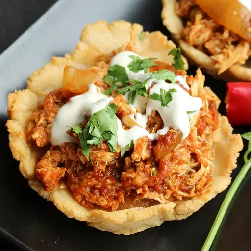

Mexican Tinga

Description
Tinga is a Mexican dish of tender shredded chicken in a spicy tomato and chipotle chile sauce served on crunchy tostada shells. This recipe is easy to make and great for feeding a crowd!
- 2 tablespoons olive oil
- 1 large onion, diced
- 1 (15 ounce) can stewed tomatoes
- 1 (7 ounce) can chipotle peppers in adobo sauce, or to taste
- 2 pounds shredded cooked chicken meat
- 16 tostada shells
- ½ cup sour cream
Steps
- Heat oil in a saucepan over medium heat. Add onions and sauté until softened and translucent, about 5 minutes.
- Meanwhile, purée stewed tomatoes and chipotle peppers in adobo sauce in a blender.
- Pour puréed mixture over onions in the saucepan; add chicken and stir to combine. Cover and simmer for 20 minutes.
- Mound chicken mixture onto tostada shells and garnish with sour cream.
Home